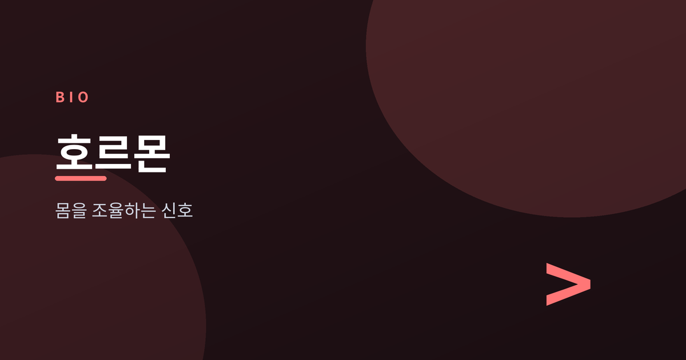
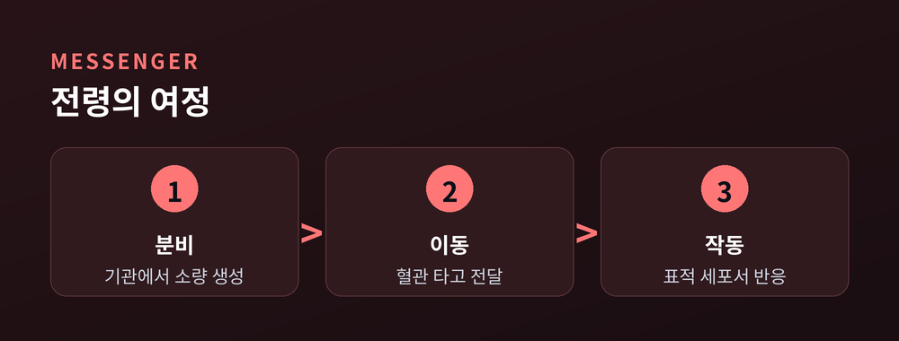
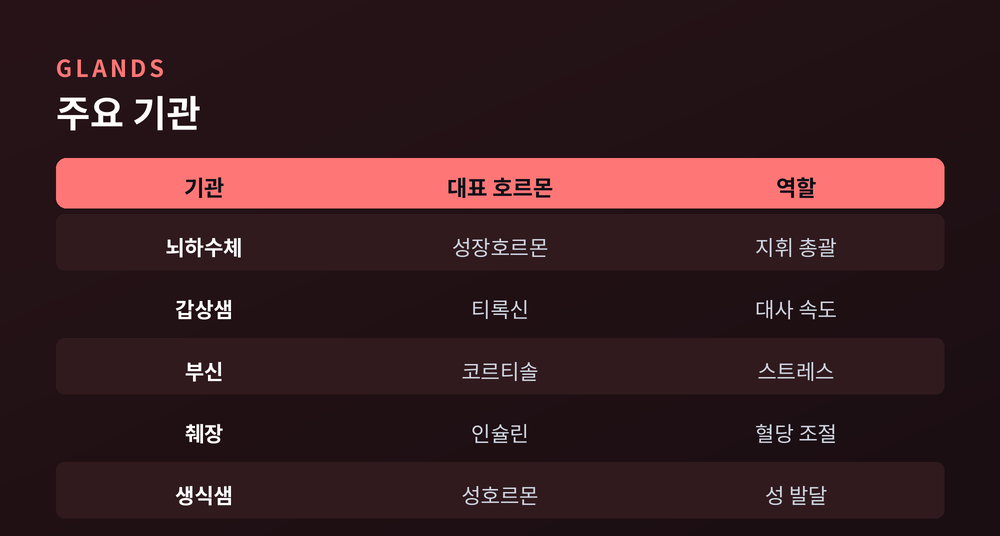
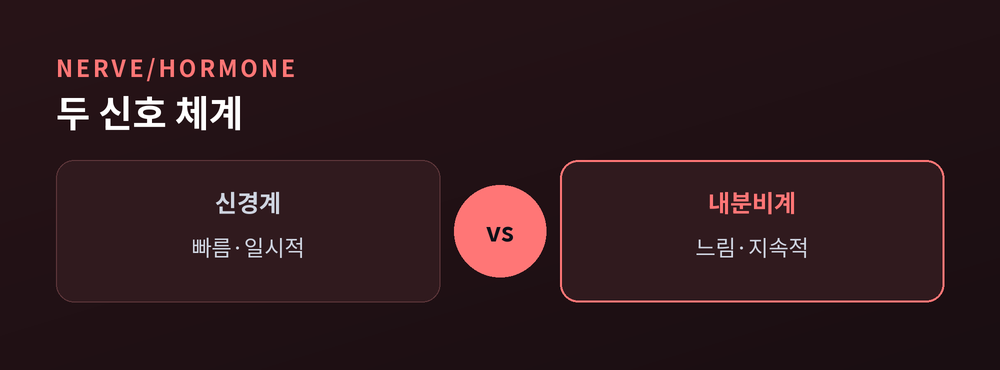
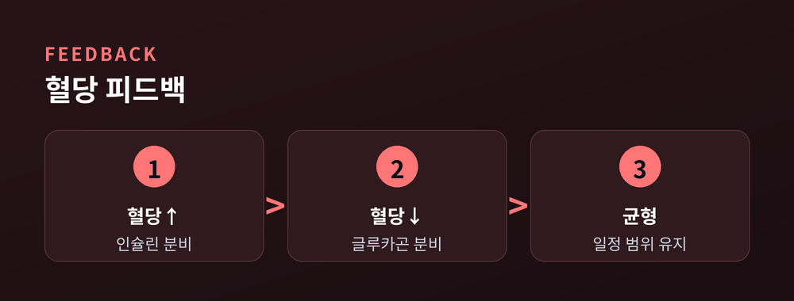

몸을 조율하는 화학 신호

이번 글에서는 호르몬과 내분비계가 어떻게 몸을 조율하는지 정리해 보겠습니다.
긴장하면 심장이 뛰고, 밥을 먹으면 나른해집니다. 우리가 의식하지 못하는 사이에도 몸속에서는 수많은 신호가 오갑니다. 그 신호를 실어 나르는 화학 물질이 바로 호르몬입니다.
용어는 낯설어도 원리는 어렵지 않습니다. 하나씩 짚어 보겠습니다.
호르몬은 혈액을 타고 온몸을 도는 화학 전령입니다. 특정 기관에서 아주 적은 양이 만들어져, 멀리 떨어진 표적 세포까지 전달됩니다.
편지에 비유하면 이해가 쉽습니다. 보내는 곳(내분비 기관)이 있고, 배달 경로(혈관)가 있고, 받는 곳(표적 세포)이 있습니다. 표적 세포에는 그 호르몬에만 반응하는 수용체가 있어, 열쇠와 자물쇠처럼 맞아떨어질 때만 작동합니다.
덕분에 아주 적은 양으로도 성장, 대사, 감정, 생식까지 몸의 큰 흐름을 조절할 수 있습니다.

호르몬을 만드는 기관은 몸 곳곳에 흩어져 있습니다. 각각 맡은 역할이 다릅니다.
뇌 아래의 뇌하수체는 다른 기관에 명령을 내리는 지휘자입니다. 갑상샘은 대사 속도를, 부신은 스트레스 대응(코르티솔·아드레날린)을 맡습니다. 췌장은 혈당을, 생식샘은 성 발달과 생식을 조절합니다.
이들은 따로 노는 것이 아니라 서로 신호를 주고받으며 협력합니다.

몸에는 신호를 전하는 또 하나의 체계, 신경계가 있습니다. 둘은 목적은 비슷하지만 성격이 다릅니다.
신경계는 전기 신호로 빠르게 움직입니다. 뜨거운 것에 손이 닿으면 순식간에 떼는 반사가 그 예입니다. 반응은 즉각적이지만 오래가지는 않습니다.
호르몬은 혈액을 타고 흐르니 느리지만 지속적입니다. 성장이나 사춘기의 변화처럼 며칠, 몇 달에 걸친 조율은 호르몬의 몫입니다.
"신경은 순간을 맡고, 호르몬은 흐름을 맡습니다." 둘이 함께 있어야 몸은 매끄럽게 돌아갑니다.

내분비계의 핵심 원리는 음성 피드백입니다. 결과가 충분해지면 신호를 줄여, 스스로 균형을 맞추는 방식입니다.
혈당 조절이 대표적입니다. 밥을 먹어 혈당이 오르면 췌장이 인슐린을 내보내 당을 세포로 들여보내고, 혈당이 내려가면 글루카곤이 나와 다시 끌어올립니다. 두 호르몬이 시소처럼 맞물려 혈당을 일정 범위에 붙잡아 둡니다.
집 안 온도조절기와 비슷합니다. 더우면 냉방을, 추우면 난방을 켜 목표 온도를 유지하듯, 몸도 넘치면 줄이고 모자라면 채웁니다.

이 정교한 조율이 흐트러지면 몸에 신호가 나타납니다.
혈당 조절이 잘 안 되면 당뇨로 이어질 수 있습니다. 갑상샘 호르몬이 너무 많거나 적으면 대사가 빨라지거나 느려져 체중·체온·기분에 변화가 옵니다. 부신이나 생식샘의 균형이 흔들려도 여러 증상이 생깁니다.
물론 이런 판단과 치료는 전문가의 몫입니다. 다만 우리 몸이 얼마나 촘촘한 화학 신호로 유지되는지 알아 두면, 평범해 보이는 컨디션의 하루하루가 조금 다르게 느껴질 것입니다.